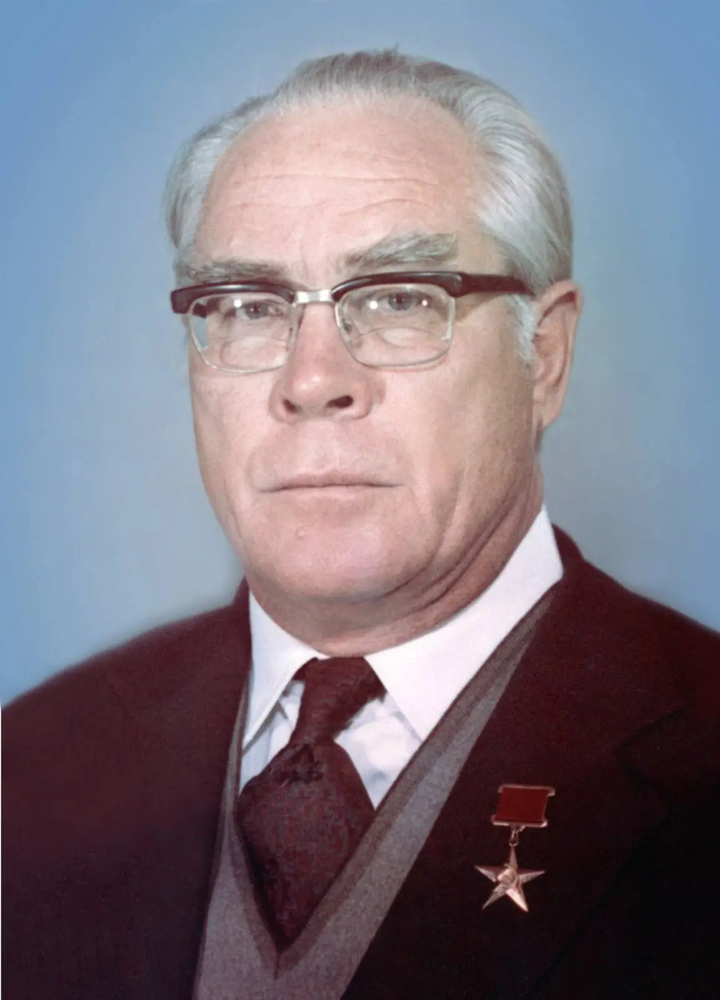

👤 Сталь Сергеевич Покровский
1926–1997 · Первый директор ППГХО

Сталь Сергеевич Покровский — организатор горного производства, доктор технических наук, действительный член Академии горных наук, Герой Социалистического Труда (1980), почётный гражданин Краснокаменска (1994). Первый директор ППГХО, руководивший предприятием почти 30 лет.
📌 Основные факты
| Сталь Сергеевич Покровский | |
|---|---|
| Рождение | 8 марта 1926, Харьков, Украинская ССР |
| Смерть | 3 марта 1997, Краснокаменск, Читинская область (70 лет) |
| Образование | Казахский горно-металлургический институт (1948) |
| Учёная степень | Доктор технических наук |
| Должность | Директор ППГХО (1968–1997) |
| Звания | Герой Социалистического Труда (1980) |
| Почётное звание | Почётный гражданин Краснокаменска (1994) |
| Место погребения | Котляковское кладбище, Москва |
📜 Биография
После окончания в 1948 году Горно-металлургического института в Алма-Ате и до 1961 года работал в Казахстане.
С 1964 по 1967 год руководил строительством уранодобывающего предприятия в Северном Казахстане.
С января 1968 года по март 1997 года являлся директором ОАО ППГХО. Производственную деятельность всегда успешно сочетал с научной работой.
🔬 Научная деятельность
Покровский является автором более чем 100 научных публикаций в области технологии добычи и переработки урановых руд, а также обеспечения радиационной безопасности на уранодобывающих предприятиях.
Ключевые работы:
- «Опыт борьбы с радоном на урановых рудниках» (1968, в соавторстве)
- «Способы обеспечения радиоактивной безопасности при разведке и добыче урановых руд» (1994, в соавторстве)
🏅 Награды
- Герой Социалистического Труда (1980)
- Орден Ленина (1962, 1976, 1980)
- Орден Октябрьской Революции (1971)
- Орден Трудового Красного Знамени (1980)
🏙 Память в Краснокаменске
В Краснокаменске в честь Сталя Покровского названы:
- проспект в центре города
- парк, где ему установлен памятник
В июне 2013 года, к 45-летию ППГХО, на стене Краснокаменского дворца культуры «Даурия» был нарисован портрет Сталя Покровского.
🏭 Значение для города
Сталь Сергеевич Покровский руководил ППГХО почти 30 лет — с момента основания предприятия до 1997 года. Под его руководством комбинат стал крупнейшим уранодобывающим предприятием страны, а Краснокаменск — городом урановой промышленности.
Его научные работы по радиационной безопасности на урановых рудниках до сих пор используются в отрасли.